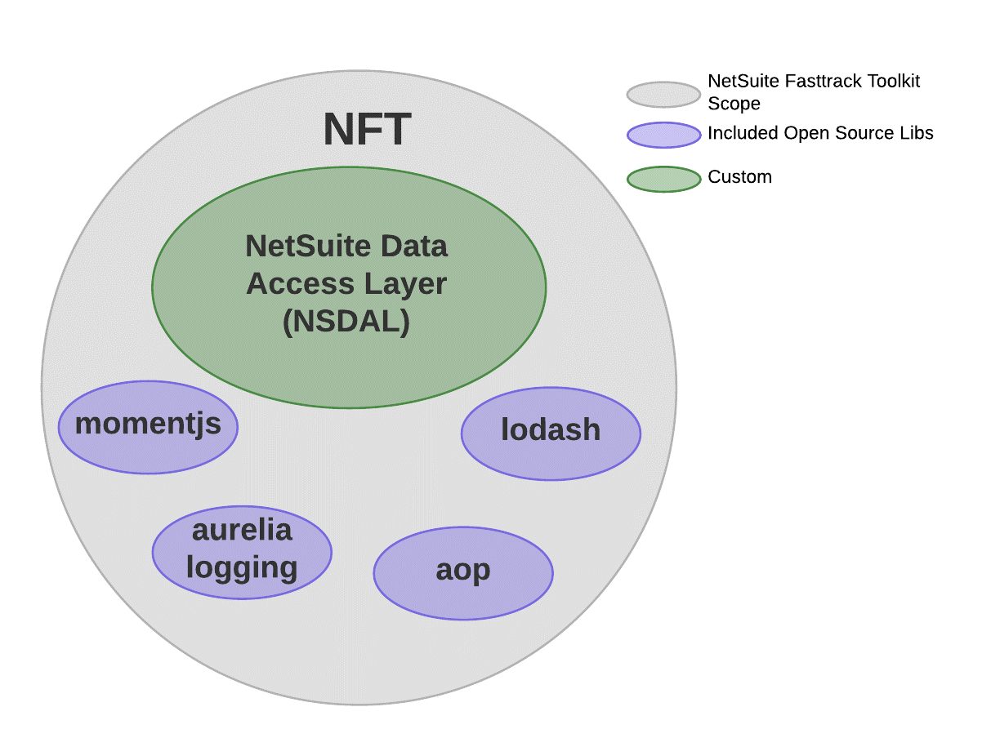

NFT (NetSuite Fasttrack Toolkit) for SuiteScript 2.0
This is a small but powerful framework for writing SuitScript that scales. A primary goal is to enable authoring scripts that easy to write and easy to maintain.
Includes
- nsdal (Netsuite Data Access Layer) ActiveRecord-like approach using predefined strong types for NetSuite record access including sublist support.
- advanced logging facility
- enhanced search handling
- immutablejs (used for arbitrary length sequences and elegant search result processing)
- governance management
- lodash
- momentjs
See API docs here

Getting Started (Typescript)
Install this package as a dependency and the SuiteScript 2.x (SS2) typings from @hitc
npm install netsuite-fasttrack-toolkit-ss2
npm install @hitc/netsuite-types --save-dev Deploy core library to NS
Use the NetSuite file cabinet advanced add button to upload the node_modules/netsuite-fasttrack-toolkit-ss2/dist/NFT-SS2-#.#.#.zip
file to the same folder in which you place your SuiteScripts. It will extract to a subfolder named NFT-SS2-#.#.#.
If you typically just put your SuiteScripts under the /SuiteScripts/ folder in the NS file cabinet then simply
extract the zip there.
A recommended practice is to put your SuiteScript 2.0 files under a subfolder, such as SuiteScripts/SS2/. This
creates a convenient 'root' folder for your SS2 projects.
After install you should get a folder link at your project root named NFT-SS2-#.#.#
This creates a folder structure mirroring what you have in NetSuite so you can use relative paths when you
import from the library (e.g. import {CustomerBase} from "./NFT-SS2-1.2.3/DataAcess/CustomerBase)
NetSuite Data Access Layer (NSDAL)
NSDAL is a variation of the Active Record pattern for working with NetSuite records.
Native SuiteScript 2.0 requires method calls and passing ‘config’ objects to access data. NSDAL uses regular javascript objects with properties, so you work with it the same way as any other javascript code.
NSDAL defines NetSuite record types in a class hierarchy. You can use the xxxBase classes directly if you don’t need custom fields. Otherwise you derive your own class and add custom fields as shown in the code example that follows.

Overview Example
/**
* Test file for SuiteScript 2.0
* (replace 'NFT/' below with the relative path to your NFT-SS2-x.y.z folder)
* @NApiVersion 2.x
* @NScriptType Suitelet
*/
import * as LogManager from 'NFT/EC_Logger'
import {CustomerBase} from "NFT/DataAccess/CustomerBase"
import {FieldType} from "NFT/DataAccess/Record"
import * as _ from "NFT/lodash"
// each script should request the DefaultLogger
var log = LogManager.DefaultLogger
/**
* define a customer class for our NetSuite account including custom fields. Standard fields come from customer.Base
* so we don't have to repeat them here. This Customer class could be in a separate file/folder (e.g RecordTypes/Customer.ts) and
* reused across all scripts via `import {Customer} from "./RecordTypes/Customer"`
*/
class Customer extends CustomerBase {
@FieldType.multiselect
custentity_multiselect:number[]
@FieldType.datetime
custentity_shawn_date : Date
}
export = {
onRequest: (req, resp) => {
// load customer internal id 1542
var c = new Customer(1542)
// strongly typed field access
c.companyname = 'a new company name'
c.custentity_multiselect = [1, 2]
c.custentity_a_date = new Date()
// persist our changes
c.save();
// just log a couple properties from our customer object
log.debug('customer', _.pick(c,['custentity_a_date', 'companyname']))
}
}
see also example.ts
Search Helpers
nsSearchResult2obj turns a netsuite search.Result into a POJO, especially useful when chaining operations or returning
search results from an API.
import {nsSearchResult2obj} from "NFT/search"
import * as search from "N/search"
const s = search.load({ id: 'somesearchid' } ).run().getRange({start:0, end:1000})
const objects = _.map(s,nsSearchResult2obj()).toArray()
// objects will be array of plain javascript objects with property names matching the field names in netsuite.
// fields with a non-falsey 'Text' value surface as properties suffixed with "Text"
// e.g. `result.fieldname` or `result.fieldnameText`
// see inline help for more (e.g. support for column labels
Lazy Search
import {nsSearchResult2obj, LazySearch} from "./search"
import {Seq} from "immutable"
// get the first result as a POJO
let firstResultAsObj = Seq(LazySearch.load("123")).map(nsSearchResult2obj()).first()Also see search in the API documentation,
especially the LazySearch class.
Governance
The governance handler utilties can be used with any script, but most often are used with a saved search in a scheduled script.
There are two functions, one for checking governance usage (governanceRemains()) and another which additionally
auto-reschedules the currently executing script (rescheduleIfNeeded())
governanceRemains supports parameters for setting thresholds on both time and units usage. See the tsdocs for more on this function.
rescheduleIfNeeded executes the passed predicate, and if it returns false it automatically
reschedules the script (using N/task) passing along script parameters if provided.
Example: exit processing automatically when governance falls below time or units threshold.
import {nsSearchResult2obj, LazySearch} from "./search"
import {governanceRemains, rescheduleIfNeeded} from "./governance"
import {Seq} from "immutable"
// process results from search id '123' until out of governance. Governance checks are run for each iteration of the
// `forEach()` and gracefully exit.
Seq(LazySearch.load("123")).takeWhile(governanceRemains()).map(nsSearchResult2obj()).forEach( result => {
// .. do something with search result.
})
// same as above, but with automatic graceful exit AND rescheduling
Seq(LazySearch.load("123"))
.takeWhile( rescheduleIfNeeded(governanceRemains()))
.map(nsSearchResult2obj())
.forEach( result => {
// .. do something with search result.
})
Also see governance API docs
Special 'apply' sublist support
See CustomerRefundBase.findApplyLine() and Transaction.ts for help.
Logging
NFT provides an advanced logging mechanism based on Aurelia's logger.
It means you can have multiple loggers and control the logging verbosity of each. In other words, it's a lightweight but much richer logging facility than the NetSuite provided logger.
AutoLogging
Automatically log entry and exit of methods with rich options by adding a line like this to the end of your script:
LogManager.autoLogMethodEntryExit({target:EC,method:/\w/}, { withProfiling:true })The above line will automatically log all methods defined on the EC object/namespace
Other configuration options include automatic logging of execution time, governance usage, and other goodies.
See the jsdoc help for autologMethodEntryExit()
Contributing
Please do.
TypeScript
This is written with TS and is recommended. However, it can be used by javascript clients as well.
Configure tsconfig to include paths for NetSuite modules and NFT modules:
"paths": {
"N/*": [
"node_modules/@hitc/netsuite-types/N/*"
]
}NetSuite Module Declarations
- Typescript definitions (N/*.d.ts files) are defined via the @hitc/netsuite-types project
Tests
The test/ folder is configured to use ts-jest to compile the sources.
to run the test suite:
npm testBuild and Publish
node_modules/.bin/tsc
node_modules/.bin/gulp
node_modules/.bin/gulp declarations
npm publish